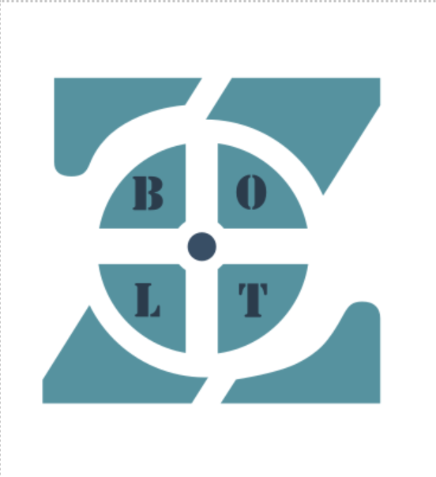

Rakstgrafika
Atzīme: 8
Rakstgrafika bija pirmā tēma ko mēs apguvām šaja mācību gadā, un to mēs apguvām setembrī. Lai izveidotu rakstgrafiku, mēs izmantojām lietotni GIMP, kurā es izvedoju šādu darbu:

3D Modelēšana
Atzīme: 9
3D Modelēšana bija mana mīļākā tēma šogad, kurā mēs darijām dažādus uzdevumus un arī gala atzīme par šo tēmu bija grupas darbs. Tēma tika apgūta novembrī un par grupas darbu par kompāniju dabūju 9, kas ir diezgan labi, bet manuprāt varējām labāk. Šeit redzams grupas logo, kuru izveidoja grupas dalībnieks:

Video veidošana
Atzīme: 10
Manuprāt, Video veidošana bija viena no grūtākajām tēmam, jo man baigi nepadodās taisīt video un vēl pie tam montēt tos ar ko man bija ļoti lielas grūtības. Video veidošanā es dabūju 10, kas nozīme, ka darbs tikai paveikts perfekti un man tas ir paveicies. Šī tēma tika veikta decembrī, un galvenais darbs bija izveidot video par savas grupas kompāniju un parādīt grupas darba gaitu, un video vidū ielikt reklāmu par kādu nosacītu tēmu, es izvēlējos "Kā izveidot drošu paroli?".
Ms Word
Atzīme: 9
Ms Words tika apgūts novembra vidū un tika izdarīti daudz uzdevumi. Par šo tēmu es pārbaudes darbā ieguvu 9 un par to esmu apmierināts, lai gan, protams, labāk būtu 10. Šaja tēmā mēs darījām dažadus uzdevumus Worda, kā piemēram, šis:

Ms Excel
Atzīme: ???
Ms Excel tēma ir visjaunākā no visām un tā ir viena no manām mīļākajām tēmām, jo man patīk strādāt Exceli un izmantot tā dotās iespējas. Par šo tēmu nav vel izlikta atzīme, bet, manuprāt, es uzrakstiju diezgan labi un nevajadzētu būt slikti. Pārbaudes darbs tika rakstīts 24. janvārī un šiet bilde no viena no uzd pārbaudes darbā: